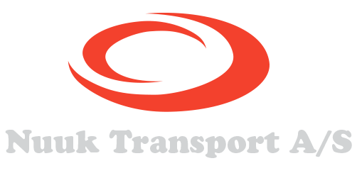

Fra én kranbil til en af Grønlands største transportvirksomheder
Vores mål er at være de bedste på vores område i Grønland og en troværdig samarbejdspartner.
Soliditet og lang erfaring
Jens Egede startede i 1985 med én kranbil. Siden kom losning på Nuuk Havn, kommunal dagrenovation, store lagerfaciliteter og restaurant Igaffik til. I dag er vi et af Grønlands største transportselskaber og landets største affaldsoperatør.
Vi kombinerer soliditet og lang erfaring med innovative og miljørigtige løsninger, fra Grønlands største mobilkran til moderne komprimatorvogne og ADR-godkendte biler.
Nuuk Transport er en del af Niclasen-koncernen, der også driver værkstedsvirksomheden Saffiorfik A/S.

Ledelse
Niclas Niclasen
Administrerende direktør
+299 55 78 03 · niclas@transport.gl
Johan Løvstrøm
Lossechef
+299 55 78 64 · johan@transport.gl
Milepæle siden 1985
- 1985
Jens Egede køber en kranbil og starter som selvstændig vognmand under navnet Nuuk Transport. Firmaet består af 1–3 mand.
- 1989
Losninger på Nuuk Havn begynder under navnet Usit Nuuk ApS. Firmaet vokser til omkring 30 ansatte.
- 1996
Firmaet omlægges til anpartsselskab under navnet Nuuk Transport og Usit Nuuk ApS.
- 1998
Den kommunale dagrenovation overtages, og firmaet har ca. 50 ansatte. Edward Niclasen bliver partner og medejer, og Nuuk Transport står alene om losning af fiskeskibe på Nuuk Havn. Den første sideloader købes.
- 2001
Dagrenovationen omlægges til et nyt, miljøvenligt koncept, og den kommunale natrenovation overtages.
- 2002
Dagrenovation for Boligselskabet INI kommer til, og vi bliver landets største affaldsoperatør. Det er vi stadig.
- 2003
Den tidligere fiskefabrik GFI på havnen købes (4.000 m² under tag), og restaurant Igaffik åbner.
- 2009
Firmaet bliver Nuuk Transport A/S med 110 ansatte og er nu et af Grønlands største transportselskaber.
- 2010
Udbygningen af Ilisivik, vores udendørs oplagring i Qinngorput, begynder. Samme år starter arbejdet for olieeftersøgningsbranchen.
- 2012
Grønlands største mobilkran gør større og højere elementbyggeri muligt i Nuuk, fx Nuuk Center.
- 2013
Ilisivik står færdig med overvåget oplagring og miljørigtigt vaskeanlæg med olieudskillelse. En ny frostfri hal på 800 m² med 8 m fri højde åbner ved havnen.
- I dag
Nuuk Transport er en del af Niclasen-koncernen med transport, kran, losning i Nuuk og Aasiaat, renovation og kantinedrift.
Prototype: Tidslinjen efter 2013 skal udfyldes af virksomheden.
Ansvar for miljø og samfund
Vi arbejder med miljørigtige løsninger i hele forretningen og støtter lokale initiativer i Grønland.
- Kommunens udgifter til renovation blev halveret, da vi blev operatør
- Grønlands største og mest moderne ADR-godkendte bil til flydende affald
- Miljørigtigt vaskeanlæg med olieudskillelse på Ilisivik
- Certifikatkurser til kran og truck for medarbejderne
Sponsorpolitik
Vi støtter initiativer i Grønland, der gavner en større gruppe mennesker, især inden for miljø og sundhed og til gavn for ressourcesvage borgere. I særlige tilfælde kan enkeltpersoner med særlige behov, fx sygdom, støttes. Støtten gives normalt som naturalier eller tjenesteydelser.
Vi støtter ikke rejser, studieophold, aktiviteter uden for Grønland eller projekter med løn til arrangører.
Send en ansøgning med en klar beskrivelse af formål og brug af støtten til nuuk@transport.gl. Vedtaget i bestyrelsen 19.1.2013.
Certificerede og dygtige medarbejdere
Vi køber certifikatkurser fra EUC Nordvestsjælland, så vores medarbejdere har de rette kvalifikationer og opfylder Arbejdstilsynets krav.
- Mobilkrancertifikat: betjening af mobile kraner fra 8 til over 30 tonsmeter, anhugning, lastdiagrammer og stabilitet
- Gaffeltruckcertifikat: sikker kørsel med trucks og stablere i lager, container og på rampe